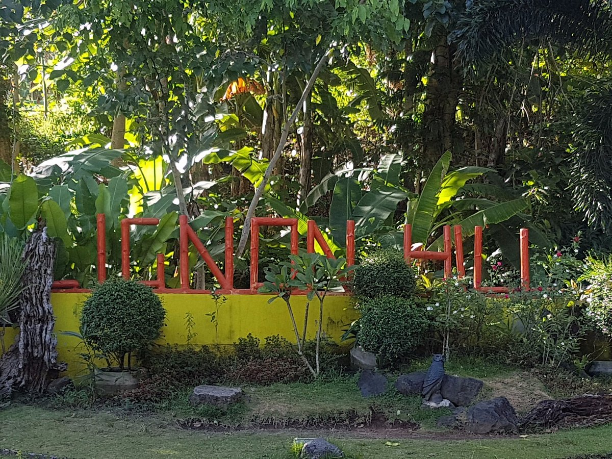
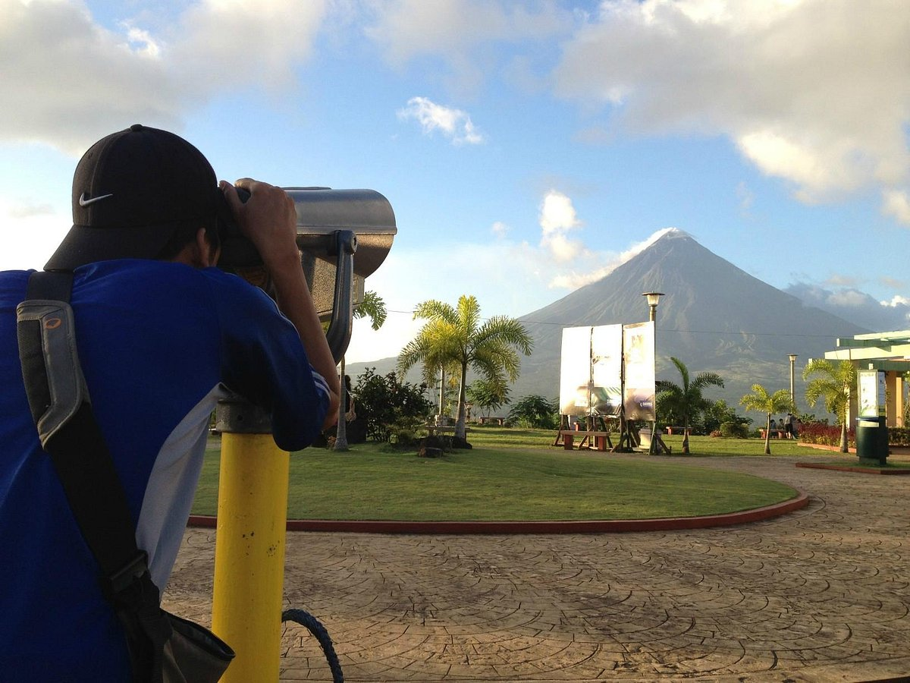
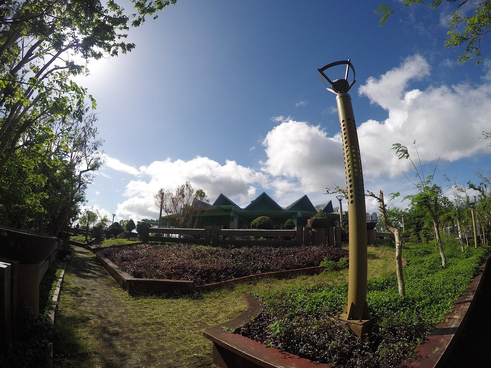

If you’re looking for a fun and thrilling adventure in Bicol, the best place to be is Ligñon Hill Nature Park. This Legazpi tourist spot is popular for families and groups traveling together. This adventure park is located on top of a steep hill so getting there is quite a challenge already. And when you get there, you’ll be rewarded with fresh air and a 360-degree view of the fields below. You can also try their famous 320-meter long zip line, and a hanging bridge.
From the airport: Turn right to Magayon Drive (you will pass through a private subdivision). Turn left at the junction with Bogtong Road and proceed until you reach the tennis courts, just before the gate to the Albay Wildlife Park. You may start your trek up the hill at the entrance (near the tennis courts). You can also drive your vehicle up the hill. From Legazpi Port: A Legazpi-Daraga Loop 1 jeepney will take you directly to the foot of the hill. From Daraga: Take a tricycle from the centro to Tagas and ask the drive to drop you off at the tennis courts.